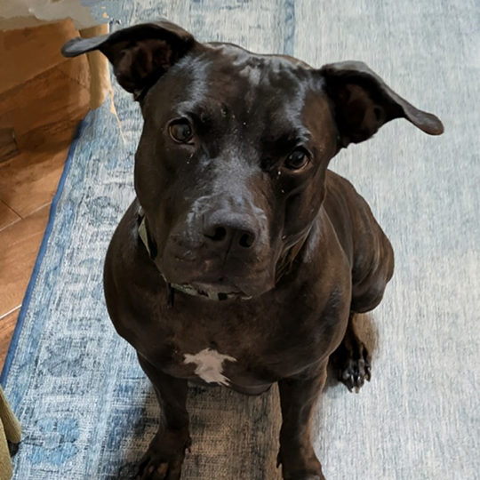
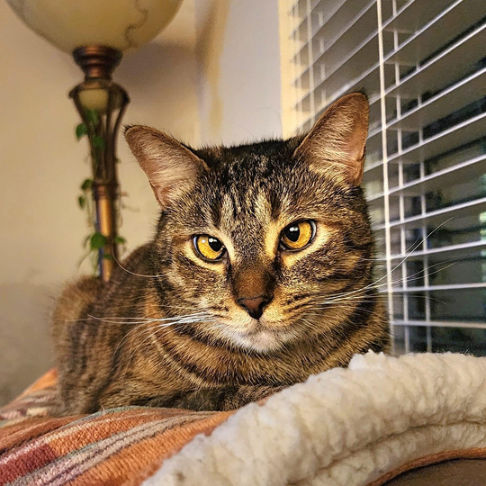
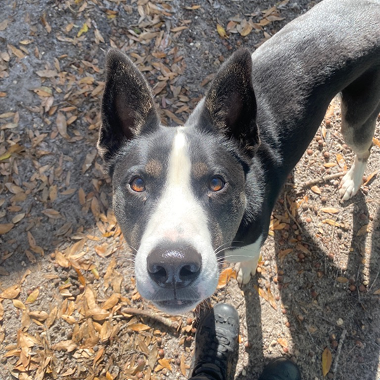

Adopt
Learn more about the dogs and cats we currently have available for adoption.

Volunteer
Volunteering opportunities include fostering, social media, and fundraising.

Donate
We accept donations through PayPal, Venmo, Zelle, and our Amazon Wishlist.

Contact
Learn how to contact us via phone or email. Find out more about our social media accounts.